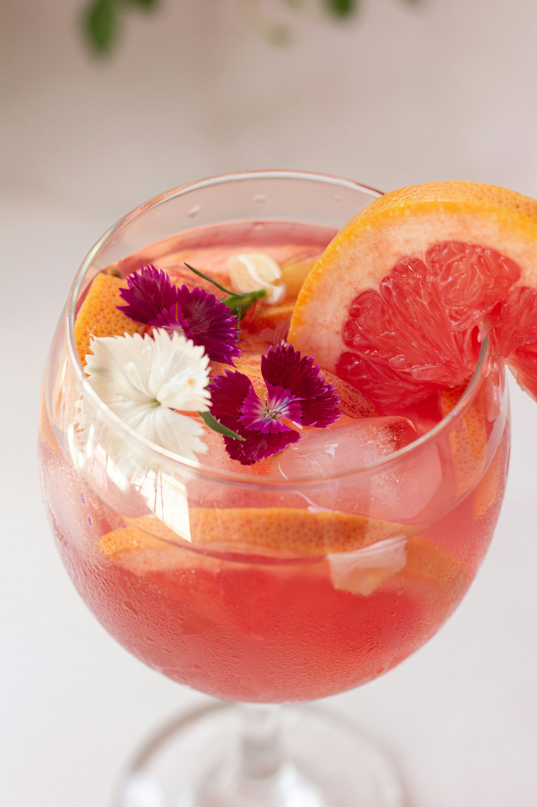
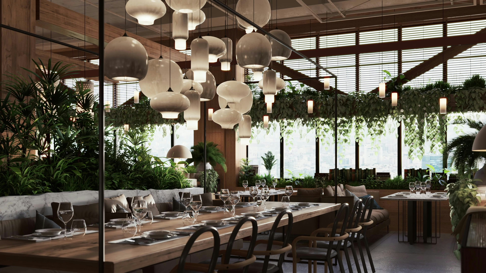

Tout a commencé sur un sentier du Puy-de-Dôme, au cœur d'une balade entre amis. Julie et Marc, deux enfants du pays, partageaient un pique-nique fait maison face à l'immensité des volcans d'Auvergne. Entre une tranche de Saint-Nectaire et quelques tomates cerises du jardin, une idée est née :
Et si on ouvrait un restaurant qui aurait le goût de ce moment ?
Pas un grand truc. Pas une chaîne. Juste un lieu simple, sincère, où chaque plat raconterait une histoire : celle d'un producteur local, d'une herbe ramassée au lever du jour, d'un fromage affiné dans une cave creusée dans la pierre.
Rapidement, ils embarquent Clara, maraîchère bio et amie de toujours, pour compléter l'équipe. Ensemble, ils dessinent les contours de Le Goût des Volcans, un petit restaurant clermontois qui refuse le gaspillage, mise sur des produits de saison, et s'inspire des recettes auvergnates de leurs grands-mères – revisitées avec créativité et une bonne dose d'amour.
Ici, on ne jette rien : les fanes deviennent velouté, le pain rassis se transforme en dessert, et les restes nourrissent le compost du potager partagé.
Chaque semaine, le menu change, au rythme des récoltes, de la météo, et des humeurs. Chaque jour, l'équipe cuisine main dans la main, dans une ambiance chaleureuse, où l'on chante parfois en préparant les légumes.
Le Goût des Volcans, c'est un rêve devenu table.
Un endroit où manger, oui, mais surtout où vivre mieux.